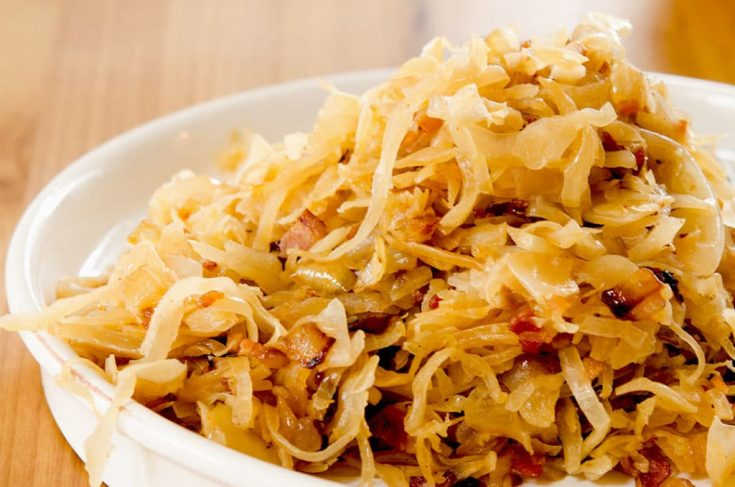

Although sauerkraut or sour fermented cabbage is a German invention, it has origins in China, when it was made from shredded cabbage that was fermented in rice wine. In Germany, they use salt instead of wine, so the water is drawn out from the cabbage, making a juice that accompanies it in the process. Fermented cabbage is often used as a side dish accompanying numerous meat dishes, but it is also often found in casseroles and sandwiches.
Meal prep time : 30 minutes
Servings : 4